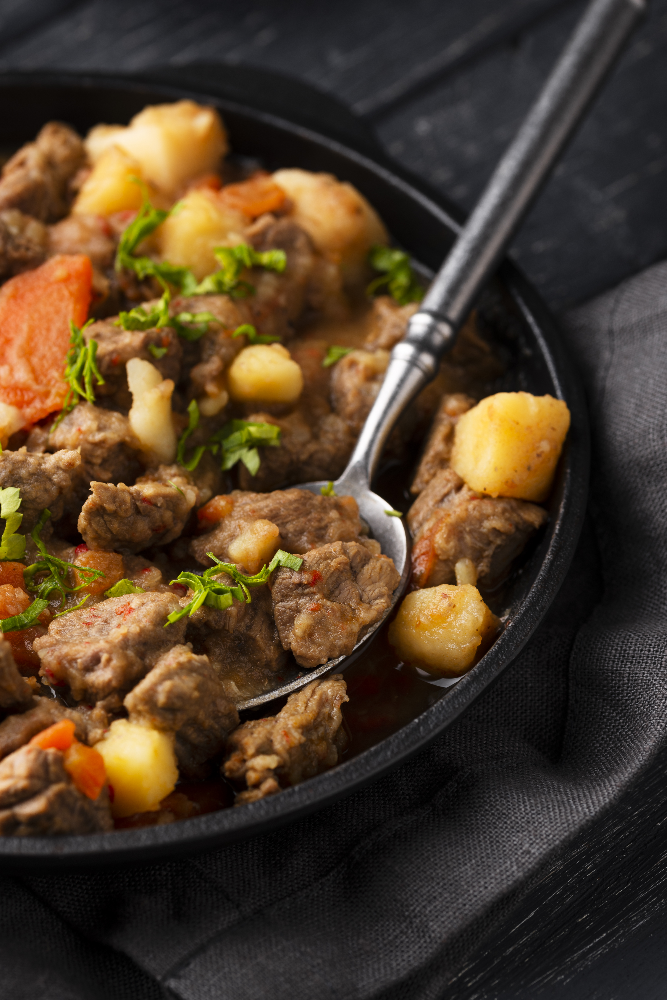

Back to Home
Homemade Pot Roast and Gravy

Description
This homemade pot roast with gravy is a classic, savory rump roast seasoned just right,
and slowly baked with carrots and potatoes.
Ingredents
- 1 (4 pound) rump roast
- 1 1/2 tablespoons avocado oil or olive oil
- 1 large onion, chopped
- 2 ribs celery, sliced
- 3 cloves garlic, smashed and roughly chopped
- 1 tablespoon tomato paste
- 2 1/2 tablespoons all-purpose flour
- 4 cups water, or more as needed
- 1 tablespoon beef bouillon paste
- 1 tablespoon Worcestershire sauce
- 2 bay leaves
- 5 large carrots, peeled and cut into 2-inch pieces
- 1 1/2 pounds large gold potatoes, peeled and quartered
- chopped fresh parsley, for serving
Directions
-
Preheat the oven to 325 degrees F (160 degrees C).
Season roast evenly with 3 teaspoons salt and 2 teaspoons pepper.
-
Heat oil in a large Dutch oven over high heat until oi is barely shimmering.
Add roast and cook on all sides until well browned, about 4 minutes per side.
Remove roast from pot and set aside.
-
To the drippings in the pot, add onions, celery, and garlic and cook, stirring constantly, for about 2 minutes.
Add tomato paste and flour and cook for 1 minute.
Add water and use a wooden spoon to stir and scrape any browned bits from the bottom of the pot. Stir in bouillon, and Worcestershire sauce.
Season with bay leaves and remaining 1 teaspoon salt and ½ teaspoon pepper, and cook until slightly thickened. Adjust seasoning if desired and return roast to the pot.
-
Bring to a simmer, cover and place in the preheated oven.
Cook covered for 1 hour and 45 minutes.
-
Remove roast from the oven, uncover and carefully turn roast over.
Add carrots and potatoes and gently incorporate them into the sauce.
Cover the pot.
-
Return to the preheated oven and bake until fork tender, 2 to 3 hours.
Let stand, covered, for 15 minutes, then slice and serve roast with vegetables and gravy.
More recipes here